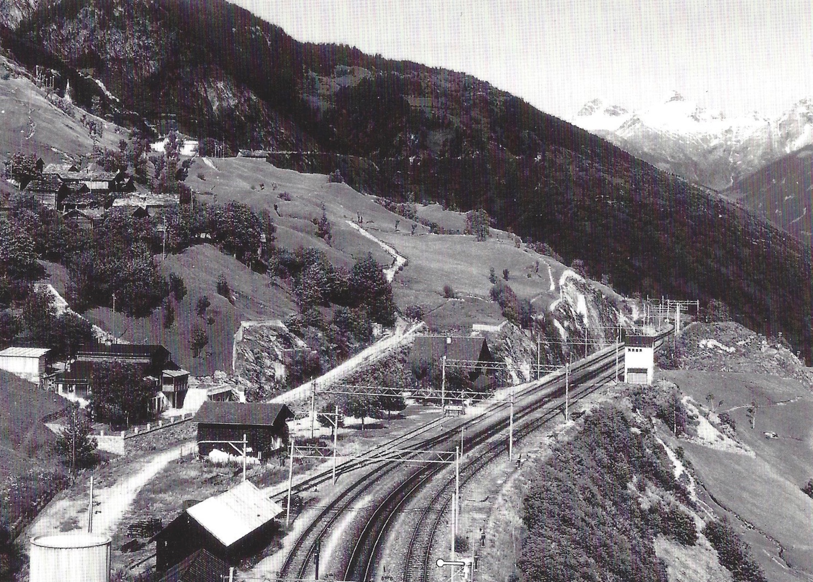
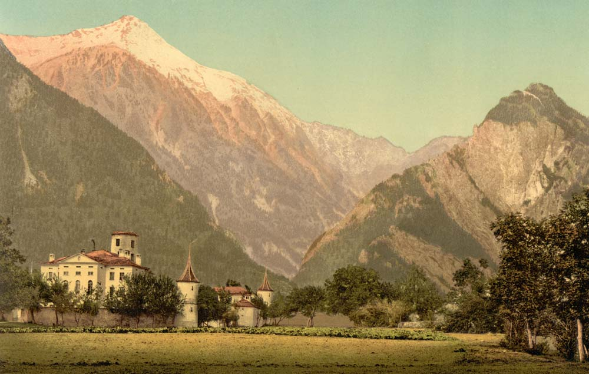

Zurück im Wallis
Ende März 1910 sagten wir Ambrosetti Lebwohl. Als sie in Rosario die Köpfe aus dem Zugfenster streckten, wäre ihnen beinahe das Bargeld von 600 Pesos gestohlen worden, denn ein Taschendieb griff in Thelers Hosentasche. Weil der schnell genug reagierte, nahmen der Dieb und ein zweiter Gauner Reissaus. – Die Reise von Buenos Aires nach Marseille verlief reibungslos. Wir erfahren einzig, dass die Verpflegung dieselbe gewesen sei wie 18 Jahre zuvor auf dem Dampfer Dom Pedro. Die Reisekosten für die Grossfamilie dürften ungefähr 2500 Franken betragen haben.
In Marseille wurden sie von Thelers Bruder Albert erwartet; er begleitete sie bis Brig. Die Kinder seien auf der Fahrt bis Raron begeistert gewesen. Als ihr Vater jedoch kurz nach Raron hinauf zum Dorf Ausserberg zeigte, habe der Anblick bei den Kindern und bei der Mutter eine nasenhängende Missstimmung ausgelöst. Anfang Mai war von Frühling keine Spur. Im Gegenteil, der kalte Wind auf dem Briger Bahnhof habe die Gemüter noch mehr verblassen lassen. Für die kälteungewohnten jungen Leute kam es in Ausserberg noch schlimmer. Zwar habe die Bergfahrt mit der Dienstbahn – die Bahnstrecke befand sich ja erst im Bau – alle etwas lebendiger werden lassen, aber die unattraktive Wohnung, die Kälte und der in der Nacht gefallene Schnee wirkten so niederschmetternd, dass fast die ganze Gesellschaft zu heulen anfing. Und damit seien sie bei den Ausserberger Bevölkerung auf wenig Sympathie gestossen. Die Familie erlebte die Rückkehr als kalte Dusche.
Die Schweiz und Argentinien um 1910
Aus dem um die Mitte des 19. Jahrhunderts armen Bauernland Schweiz war bis 1900 eines der reichsten Länder weltweit geworden. Das war der zweiten industriellen Revolution zu verdanken, bei der die Schweiz zu einer hoch spezialisierten Industrienation wurde. Maschinenfabriken wie Sulzer (1834 gegründet, mit 3000 Beschäftigten um 1900), Escher-Wyss (um 1900 weitherum bekannt für Dampf- und Wasserkraft), die Maschinenfabrik Oerlikon (1876 gegründet), und ganz besonders die BBC in Baden waren Industriekonzerne mit grosser Innovationskraft. Die 1891 gegründete Brown, Boveri & Cie nahm in Februar 1892 die Fabrikation auf und verzeichnete ein schnelles Wachstum. Bereits 1900 erfolgte die Expansion ins Ausland, und ab 1910 war die BBC der grösste Konzern der Schweizer Maschinenbauindustrie. Nicht zu vergessen ist der Aufbau der chemischen Industrie in Basel, und mitentscheidend war die durch die ETH wesentlich mitgeprägte wissenschaftlich-technische Entwicklung. In der Elektrifizierung war die Schweiz um 1900 führend in Europa. Während hier pro Kopf der Bevölkerung 53 kWh produziert wurden, waren es in Frankreich 8 kWh, in Grossbritannien 4 kWh und in Deutschland 18kWh. Mit Elektrizität war auch die Schweiz noch keineswegs flächendeckend versorgt. In den meisten Walliser Dörfern waren Fett- und Petrollampen sowie Kerzen nach wie vor die einzigen Lichtspender. Auch ein Jahrzehnt danach war das nicht anders, wie wir später sehen werden.
Was die Eisenbahn angeht, so hatte Brig seit 1878 einen Anschluss nach Westen. Im Jahr 1906 erfolgte die Gründung der Berner Alpenbahngesellschaft Bern-Lötschberg-Simplon. Bereits seit 1891 gab es eine Konzession für den Bau einer Eisenbahnstrecke zwischen Spiez und Frutigen mit der Option einer Verlängerung ins Wallis. Der geistige Vater der Lötschbergbahn war Wilhelm Teuscher. Auf der Basis einer Studie vertrat er die Ansicht, dass die Bahn nach Kandersteg und durch einen Scheiteltunnel nach Goppenstein geführt werden könnte. Von dort sollte die Strecke auf einem Lehnentrassee hinunter ins Rhonetal zum Nordportal des geplanten Simplontunnels verlängert werden. Diese Variante wurde schliesslich umgesetzt. Baubeginn war der 15. Oktober 1906. Während der Bauzeit ereigneten sich zahlreiche tödliche Unfälle, so im Februar 1908 bei einem Lawinenniedergang bei Goppenstein (12 Tote) und im gleichen Jahr bei einem Wassereinbruch (25 Tote). Es mussten insgesamt 28 Tunnels (davon 26 auf der Südseite) und zahlreiche Viadukte gebaut werden. Acht der Tunnels auf der Südseite wurden zwischen November 1910 und März 1911 durchstossen (also nach der Rückkehr der Familie Theler nach Ausserberg). – Die Eröffnung war im März 1912 geplant, musste aber zweimal verschoben werden. Am 15. Juli 1913 wurde die von Beginn weg elektrifizierte Strecke einem reduzierten Betrieb übergeben, und ab September galt der definitive Fahrplan: 7 Züge Nord-Süd, 9 Züge Süd-Nord, davon je 4 internationale Schnellzüge.
Abgesehen von diesem Bahnbau, der im Übrigen zur Hauptsache italienische Arbeiter beschäftigte, zeigte sich im Wallis noch kaum etwas von der rasanten Industrialisierung. Erwähnenswert ist die Lonza, die 1897 in Gampel als Elektrizitätswerk gegründet wurde, 1909 nach Visp umzog und dort mit der Produktion von Kunstdünger begann.
(Quellen: Wikipedia.)
Wie nahm sich im Vergleich dazu die wirtschaftliche und politische Entwicklung in Argentinien aus?
Zwischen 1880 und 1929 erlebte Argentinien einen starken wirtschaftlichen Aufschwung, der es zu den reichsten Ländern der Welt machte. Es kam zu verstärkter Einwanderung, hauptsächlich aus Europa. Das Land exportierte Rohstoffe, Getreide und Fleisch und importierte Industrieprodukte.
Die Macht im Land ging von Oligarchen aus, insbesondere die Grossgrundbesitzer hatten grossen Einfluss. Dem Gros der Bevölkerung wurde durch ein ausgeklügeltes Wahlbetrugssystem die politischen Rechte vorenthalten. Die Einwanderer hatten kein Wahlrecht. Mitte der 1880er-Jahre setzte mit der Gründung einer Bürgerunion eine politische Gegenbewegung ein. Ab 1890 kam es zu gewalttätigen Aufständen, in deren Folge es gelang, den Oligarchen einige Zugeständnisse abzuringen.
Die Rückkehr der Familie Theler stiess auf einiges Interesse, was in einem Bericht im «Briger Anzeiger» mit dem Titel «Brief aus Argentinien» Ausdruck fand: Am 15. April verreiste von Ambrosetti Herr Johann Theler samt Familie zu dauerndem Aufenthalt nach seiner alten Heimat. Das Ziel sei Ausserberg, wo er an der neuen Lötschberg-Eisenbahn im Verein mit seinen Brüdern Geschäfte betreiben wolle. Joh. Theler sei vor 16 [!] Jahren mit Gattin und vier Kindern gänzlich mittellos nach Ambrosetti gekommen und habe dort trotz den Anfangsschwierigkeiten und zahlreichen Unfällen und Krankheiten als Kolonist und Viehzüchter sich ein Vermögen von weit über hunderttausend Fr. erworben. Falls ihm seine heimatlichen Berge nicht mehr behagten, werde man ihn in Ambrosetti überall mit freudigem Willkomm begrüssen.1
Zwei Aussagen stechen hervor, die eine, dass Theler in Argentinien ein Vermögen erworben habe, die andere, dass er im Wallis Geschäfte betreiben wolle. Zweifellos stammten die Informationen von ihm selber. Dass er über die Vermögensverhältnisse Auskunft gab, dürfte einerseits Ausdruck seines Selbstbewusstseins, andererseits vom Verlangen begründet gewesen sein, den Aussenbergern anzuzeigen, dass sie es mit einem erfolgreichen Rückkehrer zu tun hatten. Bezüglich potenzieller Geschäfte konnte es förderlich sein, wenn über seine Kreditwürdigkeit von Anfang an Klarheit herrschte. Dabei wissen wir, dass ein Grossteil der weit über hunderttausend Franken eher Wunsch denn Realität war. Zum damaligen Zeitpunkt war keineswegs sicher, dass der Verkauf des Landes in Ambrosetti je die erhofften knapp fünfzigtausend Pesos einbringen würde. Jedenfalls hatte Theler vor der Rückreise nur Vieh und Fahrhabe zu Geld machen können. Wie viel er löste, wissen wir ungefähr. – Dass es für ihn die Option gab, allenfalls wieder nach Ambrosetti zurückzukehren, ist nicht weiter erstaunlich, und es stützt die Vermutung, dass er bezüglich seiner Identität Klarheit schaffen wollte.
Welche Art von Geschäften an der neuen Lötschberg-Eisenbahn schwebten Theler vor? Eine erste Einnahmequelle erschloss sich ihnen rasch; die Thelers wurden Kostgeber für italienische Arbeiter. Es kam ihnen entgegen, dass sich besonders die Kinder, die lieber Spanisch als Deutsch sprachen, mit den Italienern verständigen konnten. Von diesen Kostgängern würde man aber nicht lange profitieren können; der Bahnbau stand kurz vor dem Abschluss.
Über das Wirtshaus, wo sie Kostgeber waren, erfährt man vorerst nichts. Spätere Ausführungen zeigen, dass es sich um das Gasthaus zum Bahnhof im Kleeboden handelte. In einiger Entfernung vom Dorf, aber in unmittelbarer Nähe zum (vermutlich bereits fertiggestellten) Bahnhofsgebäude in Ausserberg verköstigten sie hauptsächlich italienische Bauarbeiter. Das Gebäude dürfte ihnen von Anfang an gehört haben. In einem im Internet publizierter kurzer Text zur Vorgeschichte des heutigen Hotels Bahnhof Ausserberg steht, 1906 sei auf Veranlassung von Hans-Christian Theler und dessen Ehefrau Maria Josefa Salzgeber ein Wirtshaus gebaut und 1909 unter dem Namen Gasthaus zum Bahnhof fertiggestellt worden. Es sei später abwechslungsweise an Marie Stucky, geb. Theler, und Mathilde Stucky, geb. Theler, d.h. an zwei Theler-Töchter verpachtet worden. Wenn das Ehepaar Theler 1906 den Bau in Auftrag gegeben hat, geschah dies von Ambrosetti aus. Darüber steht in Thelers Erzählung erstaunlicherweise kein Wort. Und wie ein Hausbau in der Schweiz mit der damaligen finanziellen Situation in Ambrosetti vereinbar war, ist ungeklärt. Einzig Thelers Angaben im Jahr 1906 und im Januar 1910, er habe dem Vater tausend Franken und später 9000 Pesos (umgerechnet 18'000 Schweizer Franken) überwiesen, können Belege sein, dass damit der Bau des Gasthauses finanziert wurde. Nicht ausschliessen lässt sich, dass der Vater oder einer der Brüder Bauherr war.

Quelle: https://hotel-bahnhof.com/Geschichte/
Auf das gute Einvernehmen zwischen den Bauarbeitern und der Familie Theler reagierten die Einheimischen mit Argwohn; sie redeten von einer kuriosen Paktgesellschaft. Auch weil die jungen Leute dünne amerikanische Kleidung trugen, laut sprachen und sich überhaupt offensiv verhielten, eckten sie an. Das sind nid Lît für hie, sei die vorherrschende Meinung gewesen. Auch die von Pfarrer Schmid. Schon drei Wochen nach ihrer Ankunft sprach er bei der Familie vor. In Naters stehe ein schönes Haus zum Verkauf, die Villa Felsheim. Theler solle doch zugreifen; das sei etwas für seine Familie. Die Besitzerin, Frau Mengis, sei eine grundbrave Person, der man jedes Wort glauben könne. Dabei war mit Händen zu greifen, dass es dem Pfarrer hauptsächlich darum ging, die Argentinien-Rückkehrer loszuwerden. Dass Theler schon am nächsten Tag das Haus besichtigen ging und es sofort kaufte, zeigte das bekannte Muster. Er handelte einmal mehr gutgläubig, diesmal wohl umso eher, als ein Geistlicher es war, der die Verkäuferin über den grünen Klee gelobt hatte.
Theler trug sich vermutlich von Anfang an mit dem Gedanken, in der Villa eine Pension einzurichten und sich so eine dauerhaftere Einkommensquelle zu erschliessen. Im Übrigen waren ausser ihm auch zwei seiner Brüder in der Gastronomie tätig, beide führten in Ausserberg bzw. in Eggerberg eine Pension. Und sein Bruder Albert war gemäss Theler Hotelfachmann. Sie hatten zweifellos in Briefen nach Argentinien davon berichtet und so weitere Anreize gesetzt für die Rückwanderung ins Wallis. – Von Frau Mengis wurde Theler in seinem Vorhaben, im Felsheim einen Restaurationsbetrieb zu führen, bestärkt. Bereits am folgenden Tag leistete er auf den Kaufpreis von 65'000 Franken eine Anzahlung von 11'000 Franken. Frau Mengis hatte versichert, die Möblierung sei im Preis inbegriffen. Einzig die Schlafzimmer-Möbel und ein Esszimmer-Buffet wollte sie mitnehmen, sonst rein gar nichts. Als der Notar den Kaufvertrag aufsetzte, wünschte Theler, dass auch die mündlichen Abmachungen darin festgehalten würden. Davon wollte die Frau nichts wissen; das sei überflüssig, auf ihr Wort könne er sich verlassen. Bei der Übergabe fand Theler das Haus dann ausgeräumt vor. Protestieren half nichts. Thelers Fazit: Nur auf das halten, was geschrieben ist. So hatte sich die Heiligkeit dieser Frau Witwe entpuppt, und ich war der Narr.
Wie seinerzeit in Ambrosetti, startete die Familie Theler auch im Wallis mit Schulden, konkret mit einer Hypothek von über 50'000 Franken, zurückzuzahlen in spätestens zehn Jahren. Der Goldkammer aus Amerika, so Thelers Bezeichnung für das aus Argentinien mitgebrachte Kapital von 26'000 Franken, wurden weitere viertausend Franken entnommen, denn um die Villa zu einem Restaurant mit Pension umzufunktionieren, waren sowohl Renovationen als auch Umbauten notwendig. Bereits im September wurde der Betrieb eröffnet. Geleitet nicht von Theler selber, sondern von seinem Bruder Albert. Von ausserhalb der Familie kam einzig eine Köchin, denn Töchter als Serviertöchter und Zimmermädchen hatten wir selbst. Maria Josepha zog mit den Kindern nach Naters – die jüngeren gingen nun dort oder in Brig zur Schule –, ihr Mann und die 18-jährige Tochter Mathilde blieben in Ausserberg. Mathilde dürfte hauptsächlich als Kostgeberin für die Italiener tätig gewesen sein. Da einer der Brüder (Lucas) in Zermatt2 Bahnhofvorstand wurde, übernahm der andere (Paul) dessen Pension in Eggerberg. Johann Christian führte ab da für Paul auch die Pension in Ausserberg.
Die Konstellation mutet kompliziert an. Kam dazu, dass, wie schon dargelegt, Mathilde und er in unmittelbarer Nähe des künftigen Bahnhofs Ausserberg, auf dem Gelände Kleeboden, das Gasthaus zum Bahnhof führten. Sie waren hier nicht nur Kostgeber, er betrieb auch einen Gemischtwarenladen und handelte mit Baustoffen.
Dass Theler seine Pension in Naters nicht selber leitete, sondern in Ausserberg gebunden blieb, wird durch das Geschilderte nachvollziehbar. Der Hotelfachmann Albert scheint das Unternehmen Felsheim übrigens nicht profitabel gemacht zu haben. Nach nur einem Jahr wurde Theler ungeduldig, schickte den Bruder weg und verpachtete die Pension. 1910 war überhaupt ein sorgenvolles Jahr. In Naters lief es nicht wunschgemäss, und in Ausserberg blieb die Situation kompliziert. Bruder Lucas kam nämlich aus Zermatt zurück, leitete den Betrieb in Eggerberg wieder selber, und Paul wechselte seinerseits zurück in die Ausserberger Pension. Den Sommer über hatte er im Dorf ein Haus bauen lassen. Nicht nur war Johann Christian hier auch noch als Bauleiter tätig, er finanzierte das Ganze auch. Im Herbst glaubte er das Geld vom Bruder zurückzuerhalten, so dass er fortan bei der Familie in Naters würde wohnen können. Es gab jedoch einen Haken: Der Bauplatz von Pauls Haus gehörte Onkel Leiggener. Unter welchen Bedingungen Paul darauf bauen durfte, war nicht schriftlich festgehalten worden. Die Annahme, das Land während oder nach der Bauzeit käuflich zu erwerben, entsprach nicht Leiggeners Plänen. Der schielte nämlich auf zwei Wiesen und einen Acker im Kleeboden3, Eigentum des Vaters der Theler-Brüder. Nur im Abtausch mit diesen war er bereit, den Bauplatz zu veräussern. Er wollte den Landbesitz im Kleeboden erweitern. Gemäss dieser Logik hätte Theler Senior die drei Parzellen dem Sohn Paul verkaufen müssen, und dieser wiederum wäre dann via Abtausch Eigentümer der Hausparzelle geworden. (Wie durchtrieben der Onkel die Sache einfädelte, sei nur am Rande vermerkt.) Alles war nun von der Antwort des Vaters abhängig, des Mannes also, der seinerzeit die Heirat von Hanschristi, seinem Ältesten, mit Marjosi zu verhindern versucht hatte. Dessen Antwort lautete: Nein, die verkaufe ich dir nicht. Daraufhin versuchte Johann Christian den Vater umzustimmen. Die Antwort lautete um eine entscheidende Nuance anders: Nein, dem Paul nicht, dir, wenn du das willst, für dich, dann ja.
Hier waren offensichtlich Animositäten im Spiel, deren Hintergründe nicht bekannt sind. Jedenfalls bekam der Onkel, was er wollte: Johann Christian erwarb vom Vater die gewünschten Wiesen und tauschte sie ein gegen Leiggeners Bauplatz. Fazit: Paul hatte ein neues Haus, erstellt auf dem Boden des Bruders und bezahlt mit dem Geld des Bruders. Dessen Barvermögen war damit nahezu aufgebraucht, und mit der Rückzahlung war vorläufig nicht zu rechnen: Paul konnte mir in der Zeit das Geld nicht zurückgeben, da er das Geld selbst in seinem Geschäft brauchte. Dies waren Gründe genug, um an Ausserberg gebunden zu sein.- Soweit die Erzählung Thelers.
Trotz der fast leeren Goldkammer wurde Theler nicht handlungsunfähig. Durch Landverkauf an die Bahngesellschaft waren etliche Ausserberger zu Kapital gekommen, zu Geld, das sie gerne einem tüchtigen Geschäftsmann zur Verfügung stellten. Und als solcher hatte sich der Amerika-Rückkehrer ja inzwischen erwiesen. Die Geldangebote überstiegen den Bedarf, aber er schreibt, er habe natürlich zugegriffen. Statt wie bisher lediglich das Gasthaus zu führen und die Pension in Naters zu betreiben, gedachte er Zulieferer für die zahlreichen während des Bahnbaus betriebenen italienischen Pensionen zu werden. Er kaufte grosse Mengen an Lebensmitteln sowie Gegenstände des täglichen Bedarfs wie Schuhe und Eisenwaren ein. Auch Holz, Kalk und Zement vertrieb er, Dinge, die in der Zeit reger Bautätigkeit nachgefragt wurden. Ob er Baumaterialien auch an die Bahngesellschaft weiterverkaufte oder nur die Leute im Dorf Abnehmer waren, lässt sich nicht mehr eruieren. Es war Theler allerdings bewusst, dass das im Kleeboden betrieben Geschäft zu gross und zu weit vom Dorf entfernt war, um über das Ende des Bahnbaus hinaus sinnvoll betrieben zu werden. In der Tat berichtet er: Die Arbeit war zu Ende, der Lötschberg in Betrieb, und das Geschäft war nur noch für die Ausserberger und hie und da für Gwundrige, die den Ausserberg sehen wollten. Ausserdem war die Gemeindebehörde im Begriff, eine Konsum-Genossenschaft zu gründen. Für Theler war klar, dass dies das Aus seines Gemischtwarenladens bedeutete. Er meldete seine Mitgliedschaft in der zu gründenden Genossenschaft an, mit der Bedingung, dass diese ihm sämtliche Waren um den Ankaufspreis abnahm. Das wurde gutgeheissen, umso mehr, als man nun keinen Konkurrenten mehr hatte. Die Sache wurde wiederum nur mündlich abgesprochen, und Theler war auch diesmal der Geprellte. Der Präsident der Genossenschaft soll die halbe Gemeinde in Thelers Warenlager geschickte haben, damit die Leute von dort Lebensmittel, u.a. acht Tonnen Zucker [!] für 4000 Franken, sowie Schuhe, Eisenwaren, Tabak und dergleichen ins Dorf schafften. Genau so lange, bis die Lokale des Konsums so ziemlich gefüllt waren. Den Rest wollte man Theler nicht abnehmen. So blieb er auf Waren im Wert von 1800 Franken sitzen (darunter etwa Geschirr aus Porzellan!). Da ihm Drittpersonen als Zeugen fehlten, blieb das Protestieren erfolglos. Das Ergebnis war, dass er einem Teil der Gläubiger das Geld vorerst nicht zurückzahlen konnte. Auch deshalb nicht, weil der Konsum ihm die übernommenen Waren erst nach deren Verkauf bezahlte. So, liest man im Text, hätten die Leute, denen er Geld schuldeten, immerhin gewusst, dass es im Konsum sicher war, denn da war ja der Pfarrer dahinter.
Im Sommer 1914 begann der Erste Weltkrieg. In der Schweiz erfolgte am 3. August die allgemeine Mobilmachung. Auch der 48-jährige Johann Christian Theler wurde während fünf Wochen einberufen. Er leistete Dienst in Brig und auf der Furka. Bei der Rückkehr nach Ausserberg fand er vieles verändert vor. Die Lötschbergstrecke war militärisch besetzt. Auch im Kleeboden waren in seinen Gemächern Compagnien einlogiert. (Der Ausdruck meine [!] Gemächer belegt wiederum, dass sie Eigentümer des Gasthauses waren.) Unsere Tochter Mathilde war allein, als Kostgeberin den Offizieren, Haushalt und Wirtschaft, ja ganz überladen mit Arbeit. Und deshalb habe sie nicht bemerkt, dass das Militär das in einer Baracke gelagerte Holz ins Freie geschleppt und die Baracke zur Soldatenunterkunft umfunktioniert hatte. Dafür hatte er Verständnis, nicht aber dafür, dass ein Grossteil der Bretter verschwunden war. Weil im Kleeboden bereits die
dritte Ablösung Dienst tat, schob jede Gruppe die Verantwortung auf die frühere. Ausserdem wurde Theler erklärt, das Holz sei für diverse Unterstände und für Gewehrrechen, aber auch als Brennholz gebraucht worden. Für all das habe die Gemeinde zu sorgen, an diese solle er sich wenden. Dort erklärte man ihm: Das geht uns nichts an; das Militär hat uns nicht gefragt. Die hätten hier in das Dorf kommen können. Das Gemeinde- oder Schulhaus hätten wir zur Verfügung gestellt. Und schliesslich: Du hast deinen Nutzen dabei in der Wirtschaft. Nach längeren Auseinandersetzungen wurde er mit 43 Franken entschädigt, aber die Gemeinde habe das Geld sozusagen wieder einkassiert mit den vielen Verbalen [?], die wir bekamen, wenn das Licht um 10 Uhr nicht ausgelöscht war.4
Diese Episode zeigt, dass die Gemeinde wenig Rücksicht nahm auf die geschäftlichen Belange des Rückkehrers; auch Missgunst dürfte mitgespielt haben. Dabei stand es seit dem Ende des Bahnbaus mit seinen Geschäften im Kleeboden nicht zum Besten. Er schreibt denn auch, dass die Kriegsjahre dem Wirtewesen wenig Rosiges gebracht hätten und sich die Familie am Neujahrstag 1915 einzig an der Geburt der Tochter Isabel habe erfreuen können. Wie schwierig diese Zeit war, erhellen auch Hinweise des Sohnes Hans. Auch er hat seine «Erinnerungen» zu Papier gebracht. Bei Kriegsausbrauch war er zehnjährig. Er schreibt von bitterster Armut in Naters im Winter 1917. Da habe er jeden Abend bei den Soldaten die vorige Suppe abgeholt, und sie seien jeweils als Kinder vor einem Sack Polenta, den der Vater aufgetrieben habe, niedergekniet und hätten ein Dankgebet zum Himmel steigen lassen. Die Familie sei von lauter Schulden geplagt gewesen. Von bitterer Armut dürften während der Kriegszeit viele Familien betroffen gewesen sein. Dass es den Thelers nicht viel besser ging, überrascht nicht, denn ihr Geld war in Immobilien gebunden (wie seinerzeit in Ambrosetti, als es in der Farm steckte), und der Betrieb des Gasthauses Ausserberg warf wenig ab, auch wenn es von Armeeangehörigen frequentiert wurde. Trotzdem hat der Sohn die soziale Misere gerade seiner Familie zugespitzt dargestellt. Damals dürften viele Familien in Naters von der Soldatenküche profitiert haben. Es war Usus, aus den Militärküchen Suppe an die Bevölkerung abzugeben, insbesondere an kinderreiche Familien. Kommt hinzu, dass Hans Theler, als er seine Erinnerungen zu Papier brachte, einen bemerkenswerten sozialen Aufstieg hinter sich hatte. Die Fallhöhe zur Walliser Jugendzeit war gross.
Ein Weinkeller in Ausserberg?
Während des Bahnbaus war der Betrieb des Gasthauses im Kleeboden finanziell erfolgreich. Man nahm Theler zu dieser Zeit als erfolgreichen Gastronomen und Geschäftsmann wahr. Während des Weltkriegs riet ihm dann jemand, auch Weinhandel zu betreiben. Nicht etwa von Naters, sondern von Ausserberg aus. Wein könne man hier oben im Berginnern besonders gut lagern. Die Idee, in Bahnhofsnähe einen Felsenkeller zu bauen, faszinierte den Argentinien-Rückkehrer. Bald einmal konkretisierte sich bei ihm die Idee eines Weinlagers mit Platz für zehn Holzfässer mit je einem Fassungsvermögen von zehntausend Litern.5 In Flaschen abgefüllt, wollte er den Wein in den Handel bringen. Er fuhr nach Sitten, liess sich ein Fass des entsprechenden Volumens zeigen und die Kosten berechnen. Schon dies war hochfliegend ambitioniert, aber sein unternehmerisches Gen, einmal aktiviert, trieb weitere Blüten:
Voraussehend, braucht es noch viel an anderen Sachen zum Betrieb einer solchen Weinhandlung. Dafür plante ich eine Schneidemühle (Sägewerk), da hiefür eine günstige Wasserkraft sich bot in der nächsten Nähe und [so] kaufte [ich] den Grund und Boden nebst dem Wasserrecht von der Gemeinde Ausserberg – für 99 Jahre zum Preis von 400 Franken. Das Wasser sollte auf eine Turbine geleitet werden, wofür das Mauerwerk für das Turbinenhaus auf dieselbe Höhe erstellt wurde. In diesen Zeiten kamen Pläne über Pläne. So wurde mir eingehämmert, der Turbine einen Dynamo anzufügen, wodurch der ganze Betrieb elektrisch laufen sollte. Eines Tages kam der Kantonsingenieur dazu und mass das Wasser, berechnete die Kraft und sagte: Genug Kraft, um die Dörfer des Ausserberg zu beleuchten.
Anlass zur Erweiterung der ursprünglichen Geschäftsidee gaben die Dörfer Bürchen und Unterbäch. Dort hatten zwei Privatunternehmer für die Elektrifizierung gesorgt. Das imponierte auch den Ausserberger Gemeinderäten. Eine Ratssitzung zum Thema habe zu einem vollständigen Übereinkommen geführt, erfahren wir. Wie in Ausserberg üblich, beliess man es bei mündlicher Abmachung. Bloss auf einem fliegenden Blatt hatte man einigermassen aufgezeichnet die gegenseitigen Rechte und Pflichten, um dem Volk vorzulegen, was geplant war. Um einen permanenten Turbinenbetrieb zu gewährleisten, verpflichtete sich die Gemeinde, einen Drittel des Wassers der einen Wasserleitung dafür zu reservieren. Den Berechnungen gemäss sollte das ausreichen, um abends genügend Strom für das Licht in der Gemeinde und tagsüber für den Betrieb des geplanten Sägewerks im Kleeboden zu haben. Notfalls wollte man das Wasser der mittleren von drei Dorfleitungen auf die Turbinen leiten. Ausserdem verpflichtete sich der Gemeinderat, die Stromstangen für die Leitungen aus ihren Wäldern bereitzustellen. Theler selber würde das Kleinkraftwerk bauen und betreiben. Was die Kosten für die Infrastruktur betraf, so hätten die Einwohner einzig für die Hausinstallation aufkommen müssen. Für den Strombezug pro Lampe sollten sie dann jährlich zehn Franken bezahlen. Für die Beleuchtung im Schul- und Gemeindehaus sowie in der Kirche und auf den Dorfstrassen musste der Kraftwerkbetreiber unentgeltlich sorgen.
Warum die Elektrifizierung einen unerhörten Komfort bedeutet hätte, kann ein kurzer Rückblick in Thelers Jugend, d.h. ins letzte Viertel des 19. Jahrhunderts zeigen. Bis um 1850 herum wurde Licht mit Öllampen erzeugt; erst jetzt begann sich die Petroleumlampe durchzusetzen, die Licht durch Verbrennen von Petroleumgasen gewinnt. Starker Geruch und Russbildung standen zuvor der Verwendung als Lichtquelle im Weg. Erst eine Reihe von Erfindungen wie Lampenzylinder und Runddocht führten zum Durchbruch. Bis zu dieser Zeit, erzählt Theler, hätten die Leute mit sog. Fettlusa (Fett- bzw. Öllampen) oder selbstgegossenen Kerzen Licht erzeugt; auch als in den Wohnstuben die Petrollampe zur Anwendung kam, habe der Grossvater im Stall noch immer die Fettlusa benutzt. In dessen Stube, erinnert er sich, hätten sich zur Winterzeit allabendlich mindestens sieben Personen aufgehalten, die Grosseltern, vier Tanten und er, der als Bub dort die Hausaufgaben machte. Die Erwachsenen waren am Spinnrad, wanden Garn, kardeten Wolle, strickten, banden Besen, flochten Tschiffra oder Körbe, und mitunter spielten sie Karten. Dabei sei eine einzige kleine Dochtlampe mitten auf dem Tisch gestanden. Klein deshalb, weil der Liter Gas – so wurde das Petrol genannt – 20 Rappen kostete. Das habe man kaufen und demzufolge sparen müssen, während für Fettlampen Schmer (ausgelassenes Tierfett) oder Butter, alles Selbstprodukte, gebraucht wurde. Auch wenn sich zehn Personen im Raum befunden hätten, habe man mit den Petrollampen keinen Mangel an Licht gehabt. Zu dieser Zeit, meint der Chronist, hätten die Leute besonders gute Augen gehabt.
Im Elternhaus habe auch nur das kleine Dochtlusi geleuchtet, dem Vater zum Schreiben und der Mutter zum Spinnen. Als Johann Christian von seinem Monthey-Abenteuer zurückkam und sich zu schreinern anschickte, hätten die Eltern ihm nachgegeben und eine Hängelampe für zwei Franken fünfzig gekauft.
Haa – das war eine Taghelle, es war doch schön – aber das Petrol dafür habe fast das Vierfache gekostet. Die Literflasche reichte nicht mehr, es musste eine Petrolkanne gekauft werden.
Erst 1886 als Rekrut in Liestal sah der junge Mann erstmals Gaslicht. Das war im Vergleich zur Petrollampe wiederum eine neue Qualität.
Zurück nach Ausserberg und vorwärts in die Zeit des Kraftwerkprojekts. Es erstaunt nicht, dass die Gemeindeoberen den dargestellten Vereinbarungen zustimmten. Ausserberg bekam für wenig Geld Elektrizität, das finanzielle Risiko lag beim Initianten. Dass er sich nicht besser absicherte, hatte wohl einmal mehr mit seiner Risikobereitschaft zu tun, besonders aber mit dem Enthusiasmus als Macher. Zu einem Zwischenstopp kam es erst, als ein paar ältere Männer wegen des Wassers Bedenken anmeldeten. Dazu kam es nach der Abstimmung im Gemeindehaus, bei der die Vorlage von der grossen Mehrheit der stimmberechtigten Männer gutgeheissen worden war. Gewohnheitsverneiner nennt Theler die Skeptiker. Aber er verstand sie, denn Wassermangel, ja Wassernot kannte man in den Walliser Bergdörfern seit je. Auch die Auswanderungswelle in der zweiten Hälfte des 19. Jahrhunderts erfolgte ja in gewissen Dörfern aus ebendieser Not heraus. Jedenfalls erkannte der Initiant die Brisanz des Arguments – und schwenkte blitzschnell um. Das Projekt stand und fiel mit ihm als treibender Kraft. Deshalb musste er handeln. Er verabschiedete sich von der Idee, Strom mittels Turbine selber zu produzieren, und holte Rat bei der Zürcher Firma, die für die Elektrifizierung der Lötschbergbahn verantwortlich gewesen war. Das schien erfolgversprechend, hatte das Unternehmen doch eben denselben Auftrag in Leukerbad abgeschlossen. Der Werkleiter nahm den Plan, machte den Kostenvoranschlag und bestellte das Drahtseil aus Schaffhausen, und da seine Installationen in Leukerbad bald zu Ende gingen, die diese Firma dort übernommen hatte, schickte der Bauleiter etwelche schwere Kisten mit Werkzeug und Resten Installationssachen von Leukerbad nach Ausserberg anstatt nach Zürich zurück. Auch das Kabel (Drahtseil) kam bald aus Schaffhausen. Der Förster hiess die Männer nun zum Gemeindewerk6 in den Wald kommen; dort galt es die Bäume für die Leitungsstangen zu fällen. Bevor es dazu kam, erhielt der Gemeindepräsident von einem Mitbürger namens Johann Schmid einen eigeschriebenen Brief des Inhalts, dass er es ablehne, im Gemeindewald dafür Holz zu schlagen, und – gewichtiger noch – die Abstimmung habe nicht den gesetzlichen Bestimmungen entsprochen.
Theler selbst holte nun Rat ein beim Gerichtspräsidenten in Raron. Was denn ungesetzlich gewesen sei; man habe doch nach Ortsbrauch gehandelt. Der Einwand von Johann Schmid sei berechtigt, bekam er zur Antwort. Bei einer derart wichtigen Angelegenheit müsse die Bevölkerung genügend Zeit haben für die Meinungsbildung; Ausserberg hätte den Sachverhalt drei Sonntage vor der Abstimmung bekannt machen oder noch besser, ihn im Amtsblatt veröffentlichen sollen.
Das Versäumnis wurde korrigiert. Die zweite Abstimmung ging jedoch wider Erwarten mit knappem Mehr bergab. Nicht etwa, weil viele Ausserberger inzwischen ihre Meinung geändert hätten, nein, der Grund war, dass fast nur ältere Männer abstimmten. Wegen des Krieges leistete die jüngeren zu diesem Zeitpunkt militärischen Grenzdienst. Sie wandten sich denn auch brieflich an Theler; er solle nicht klein beigeben. Sobald sie wieder in Ausserberg seien, müsse es eine dritte Abstimmung geben; auch sie wollten ihre Meinung äussern.
Statt darauf einzutreten, gab Theler das Projekt auf. Er machte den Vertrag mit der Firma rückgängig, bezahlte die bisher erbrachten Leistungen aus der eigenen Tasche, immerhin 1100 Franken, und musste auch die 400 Franken fürs Wasserrecht ins Kamin schreiben. Die Gemeinde weigerte sich sogar, die Kosten für die Veröffentlichung im Amtsblatt zu übernehmen. Ein kleiner Trost war immerhin, dass er das bereits gelieferte Drahtseil einer anderen Walliser Gemeinde verkaufen konnte. Die Gemeindebürger hatten bloss die Mühe gehabt, 2 Mal im Gemeindehaus ja oder nein zu stimmen. So das leicht sarkastische Fazit des Chronisten. Nicht nur die Elektrifizierung von Ausserberg war somit vom Tisch, Theler verzichtete auch auf den Bau des Weinkellers. Das bereits fertiggestellte Fundament wurde zurückgebaut.
Theler unterschlägt an dieser Stelle das Ausmass der erlittenen Kränkung. Als die Grossfamilie aus Argentinien zurückkehrte, begegnete man ihr, wie bereits ausgeführt, mit Misstrauen. Da es der Grossfamilie Theler gelang, sowohl mit dem Gasthaus als auch mit den Warengeschäft Fuss zu fassen, kam überdies Neid ins Spiel. Als gebürtiger Ausserberger wollte er hier aber nicht nur gelitten sein, es war ihm ohne Zweifel auch um Anerkennung zu tun. Ähnlich wie er sie als Jugendlicher beim strengen Vater gesucht hatte, als er ihm die selbstgebaute Spaltsäge präsentierte. Als vergleichbaren Meisterstück-Plan lässt sich die geplante Elektrifizierung verstehen. Wenn es damit geklappt hätte, wäre Theler die Wertschätzung nicht mehr zu verweigern gewesen.
Gegen Ende seiner Erzählung wird er nochmals auf das Geschehen zurückkommen. Er schreibt, er habe einige Exemplare der gedruckten [!] «Erinnerungen» an Familien nach Ausserberg geschickt und sie an die Untaten, die sie an mir verübten, erinnert. Er habe die Gelegenheit auch benützt, um auf schadhafte Dummheiten hinzuweisen – er nennt einen verpfuschten Kirchturm und einen Glockenstreit – was ihnen nicht gar imponiert habe. (Wir werden später sehen, dass die Gemeinde Ausserberg gleichwohl sein Sehnsuchtsort blieb.)
Landwirtschaften ging ihm nicht aus dem Kopf
Als sie 1910 aus Argentinien zurückkehrten, hätte Theler gerne auch wieder Landwirtschaft betrieben. Er suchte gleich nach einem geeigneten Bauernhof. Sein Bruder Eduard machte ihn auf das Landgut Hohbrunn in Visp aufmerksam. Dieses hatte er während einiger Zeit von den Erben des Landschreibers Clemenz gepachtet. Wie sich aber herausstellte, konnte der Hof zu diesem Zeitpunkt nicht verkauft werden, da einzelne Mitglieder der weiteverzweigten Erbengemeinschaft noch nicht volljährig waren und noch unter Aufsicht der Waisenämter standen. Erst danach kaufte Theler, wie weiter oben dargestellt, das Haus Felsheim in Naters. Das Landgut stand einige Jahre später dann tatsächlich zum Verkauf. Erworben wurde es vom Kanton Wallis, der daraus eine Landwirtschaftliche Schule machte.
Auch wenn sie in der Folge die beiden Geschäfte in Naters und in Ausserberg besassen, sei ihm das Landwirtschaften nicht aus dem Kopf gegangen. Ein Agronom namens Maurer aus Visp hatte Kenntnis davon. Um 1912 machte er Theler auf das Schloss Werra in Leuk aufmerksam. Weil der Besitzer, Notar Leo von Werra, verschuldet war, erklärte der Agronom, werde das Anwesen durch das Betreibungsamt versteigert. Er würde es gerne gemeinsam mit ihm kaufen. Theler erzählt, er habe sich bereden lassen und sei alsbald entschlossen gewesen, an der Versteigerung mitzubieten. Bis zu welchem Preis sie das tun wollten, erfahren wir nicht. Schon das Gut Hohbrunn dürfte für den ehemaligen Kolonisten eine Nummer zu gross gewesen sein, zumal er die Farm in Ambrosetti nicht hatte zu Geld machen können. Erst recht galt das für die Vorstellung der beiden Männer, das Schloss Werra in ihren Besitz zu bringen. Aber sie gingen hin und, um ein ungefähres Augenmass zu nehmen, beschauten die Gebäude und schritten Wiesen und Umgrenzungen ab. Beim Mittagessen in Leuk erfuhren sie dann jedoch, dass die Versteigerung abgesagt war. Der Betreibungsbeamte erklärte ihnen schliesslich, am Vortag habe Staatsrat Seiler vor Ort den Entscheid des Regierungsrates bekanntgegeben, dass der Kanton das Objekt ausserhalb der Versteigerung kaufe, mit der Absicht, daraus ein Greisenasyl mit dazugehörigem Landwirtschaftsbetrieb zu machen. (Tatsächlich ist Schloss Werra noch heute unter dem Namen St. Josefsheim ein Alterszentrum.) Thelers Bilanz: Somit wollte das Schicksal nicht, dass ich mit meiner Familie Landwirtschaft betrieb im Wallis.
Schloss Werra in Leuk

Zum 1445 gebauten Schloss gehörten neben dem Herrenhaus ein Turm und eine Umfassungsmauer mit Ecktürmen, ein im 17. Jahrhundert errichteter Westflügel und der um 1800 gebaute Osttrakt sowie ein Park. Baron Ferdinand von Werra baute um 1800 den Barocksitz innen und aussen vollständig um. Dies und die Erweiterung machten das Schloss Werra zum grössten klassizistischen Herrschaftssitz des Wallis. Die Familie von Werra waren Meier von Leuk und Landvögte von St. Maurice.
Um 1912 war der Besitzer, Notar Leo Baron von Werra, verschuldet. So sehr, dass das Anwesen versteigert werden sollte. Drei Jahre später gab die Familie sogar zwei ihrer acht Kinder, Franz und Emma-Charlotte, zur Adoption frei. Sie wuchsen in der Familie eines preussischen Majors in Baden Württemberg auf. Die Geschichte des Franz von Werra (1914 - 1941) ist bemerkenswert; sie soll hier im Abriss wiedergegeben werden.
Als auch die Adoptiveltern 1932 finanziell ruiniert waren und sich trennten, versuchte der 18-Jährige als blinder Passagier von Hamburg aus nach Amerika zu gelangen, wurde aber entdeckt. Erst in diesem Alter bekam er Kenntnis von seiner Herkunft, worauf er seinen Geburtsnamen wieder annahm. Im Jahr darauf trat er in eine Sportschule der paramilitärischen Kampftruppe der NSDAP ein und wurde 1934 zum SA-Führer ernannt. Den vorgeschriebenen Ariernachweis beschaffte er sich beim Pfarrer in Leuk. Dabei erfuhr er auch mehr über seine Familie von Werra. Er meldete sich nun zur Luftwaffe, worauf er in der Fliegerschule in Berlin ausgebildet wurde. Nach Kriegsbeginn war er als Kampfflieger im Einsatz, was ihm Auszeichnungen wie 'Eisernes Kreuz' sowie 'Ritterkreuz' eintrug. Im September 1940 wurde er südlich von London abgeschossen und geriet in britische Kriegsgefangenschaft. Zwei Fluchtversuche blieben erfolglos, wobei er es beim zweiten, als holländischer Pilot verkleidet, immerhin bis in die Kanzel eines bereitstehenden Kampflugzeuges schaffte, bevor er gefasst wurde. Als die Briten ihre Kriegsgefangenen 1941 nach Kanada schafften, unternahm er seinen dritten Fluchtversuch. Er rettete sich über den gefrorenen St.-Lorenz-Strom in die (noch neutralen) USA und gelangte 1941 auf abenteuerlichem Weg über Südamerika, Afrika, Spanien, Italien zurück nach Deutschland. Im Kontext des Medienrummels um ihn in den USA liess er sich «Baron Franz von Werra» nennen. Schon kurz nach seiner Rückkehr heiratete er und wurde wieder als Jagdflieger aktiv. Bei einem Aufklärungsflug über der Nordsee kam er ums Leben, als seine Maschine mit Motorschaden ins Wasser stürzte. Seinen Vater, der zu dieser Zeit noch lebte, lernte er im Gegensatz zur Schwester nicht mehr kennen.
Quellen: Historisches Lexikon der Schweiz und weitere Internetrecherchen (u.a. Wikipedia-Eintrag über Franz von Werra).
Die Deutschland-Episode
Das Gasthaus und die Villa Felsheim lieferten während des Krieges so bescheidene Einkünfte, dass die Grossfamilie in misslichen Verhältnissen leben musste. Aus Ambrosetti traf ein einmaliger Betrag von 10'000 Pesos ein. Der erste Pächter war nach dem zweiten Jahr davongelaufen, so dass die Farm neu verpachtet werden musste – für die Hälfte des bisherigen Zinses. Immerhin überwies der neue Auslandschweizer-Pächter die Summe für zehn Jahre im Voraus. Die umgerechnet 20'000 Franken verwendete Theler zur Tilgung von Schulden. Als Belastung blieben 40'000 Franken der Felsheim-Hypothek, deren Rückzahlung näher rückte. Dringender war, die Lebensgrundlage für die Familie zu sichern. Um unsere Existenz aufrechterhalten zu können, schreibt er, habe er neuen Erwerbsmöglichkeiten gesucht. Jemand riet ihm, seine reiche in Argentinien gewonnene Erfahrung zu nutzen, um in Deutschland einen Gutsbetrieb zu leiten. Viele Grossgrundbesitzer suchten Schweizer Gutsverwalter. Als Theler zurückfragte, wie das während des Krieges möglich sei, bekam er vom ungenannt bleibenden Ratgeber ein Arbeitsagaschma [Arbeitsengagement], eine Art Arbeitsvertrag, in die Hand gedrückt. Darin stand nichts von einer Gutsverwaltung; vielmehr ging es darum, Schweizer als Mineure, Maurer oder Zimmerleute nach Deutschland zu verpflichten. Drei Monate betrug die Mindestdauer eines Arbeitsverhältnisses. Für Theler, behauptete der Mann, sei die das Eintrittsbillett zu einer Gutsverwalter-Stelle: Die Reise für hin und her wird dir bezahlt. Alle Wochen kannst 15 Mark in vollem Wert in Schweizer Fr. nach Hause schicken, und in der Zwischenzeit, d.h. am Sonntag kannst du [...] nach einem Gutsobjekt suchen. Das war ein derart offensichtliches Lockvogelangebot, dass man sich selbst im Fall von Theler die Augen reibt, warum er es nicht als solches durchschaute. Der Druck, irgendwo eine Erwerbsmöglichkeit zu finden, muss immens gewesen sein. Er unterschrieb und reiste im November 1917 mit einigen Kollegen als Mineur nach Bingerbrück.7 Der Empfang war wenig verheissungsvoll, wurden die ankommenden Schweizer doch aufs Polizeiamt geführt, wo man sie auf strikte Verhaltensregeln verpflichtete. Sie befänden sich in einem Sperrgebiet. Das Postgebäude, den Bahnhof sowie die Brücke nach Bingen zu betreten war verboten. Nur auf dem Weg vom Quartier zum Arbeitsplatz durften sie sich bewegen. Der Traum vom Gutsverwalter-Job war geplatzt, ehe die Suche danach beginnen konnte.
Am Tag nach der Ankunft wurden die neuen Arbeiter in einen Stollen geführt, wo unter anderem mit einem Bohrgerät, einem sog. Revolver, Sprenglöcher in den Fels getrieben werden mussten. Theler wurde mit der Handhabung vertraut gemacht. Während dem ersten Lochbohren schaute ich hin und wieder auf die Seite und beobachtete, wie die Kollegen es machten. So und ähnlich ahmte ich nach, bis [es] gelungen ist, mit derartigem Geschüttel nachher Loch auf Loch zu bohren. Auch als 51-Jähriger beherrschte Theler ein Handwerk noch immer schnell, wenn sich ihm Anschauung bot. Zwar wurde er diesmal eher von der Maschine beherrscht, als dass er sie selber beherrschte, aber nach der 8-stündigen Schicht scheint ihm das Geschüttel nicht mehr viel ausgemacht zu haben. Ich war der gemachte Mineur.
Nach einem Monat des Mineurierens bekam er eine andere Arbeit übertragen. Verbunden damit war die Beförderung zum Vorarbeiter als Zimmermann und Maurer. Mit den ihm zugewiesenen Arbeitern musste er einen Wassergraben mit Zementboden und holzverschalten Wänden bauen. Thelers leitende Rolle erklärte sich nicht zuletzt daher, dass er sich mit den Italienern einigermassen verständigen konnte. – Aber warum gab es in Deutschland während der Ersten Weltkriegs italienische Arbeiter? Es waren Kriegsgefangene aus einer der zwölf Isonzoschlachten8. Theler schreibt, die Italiener hätten gute Dienste geleistet, und die Ingenieure seien ihm gut gesinnt gewesen (was auch daran gelegen haben mag, dass er bei einem Streik als Letzter das Werkzeug niedergelegt hatte, gerade noch rechtzeitig, bevor man ihn verprügelte). Deshalb bekam er Aussicht auf eine besser bezahlte Stelle. Aber da er mit falschen Versprechungen nach Deutschland gelockt worden war, kehrte er nach Ablauf der drei Monate in die Schweiz zurück. Aus der Erinnerung zieht er eine positive Bilanz: Im Grossen und Ganzen war ich doch froh, in Deutschland gewesen zu sein in jener Kriegszeit, denn ich hatte doch viel erfahren, gesehen, gefroren [und] gehungert.
Die Rückkehr verzögerte sich; ausserhalb der Sperrzone musste er eine zehntägige Quarantäne abwarten. Er erklärte sie sich damit, dass er in Bingerbrück so viel militärisch Relevantes mitbekommen hatte, dass man ihn nicht von einem Tag zum anderen in das Ausland ziehen liess. Auf dem Rangierbahnhof in Bingerbrück machten Kriegsmaterial- und Verwundetentransporte Zwischenstation. Auch ranghohe Offiziere aus dem Hauptquartier seien da herumspaziert. Die Quarantäne habe den Zweck gehabt, das Gehörte und Gesehene zu vergessen. Seine Wahl fiel auf Frankfurt am Main Dort habe regelrecht zu hungern gelernt. Er hatte zwar Geld im Sack, aber viel zu wenig Essenskarten.
Beim letzten Aufenthalt in Singen galt es noch, die 500 Mark Lohn in Schweizerfranken umzutauschen. Statt der erwarteten 600 wollte ihm das Wechselhaus nur 400 Franken geben. Man riet ihm, das Geld auf der Singener Bank zu lassen. Jetzt geht der Krieg bald dem Ende zu. Deutschland gewinnt den Krieg. Dann bekommt die Mark wieder ihren vollen Wert. – Gut, ich liess die ersparten 500 Mark in Singen auf der Bank, wo selbe noch jetzt liegen.
Sogar den Lohn musste er also als Verlust abbuchen. Wie seine Familie darauf reagierte, erfahren wir nicht. Sie dürfte sich nicht zu viele Hoffnungen gemacht haben. Während der dreimonatigen Abwesenheit des Vaters hatten sich Frau und Kinder ohnehin selber irgendwie durchbringen müssen. So hält Theler denn auch fest, das Beste sei gewesen, alle gesund und in vollem Arbeitseifer anzutreffen.
-
BA vom 25.05.1910. ↩︎
-
Die Gesamtstrecke von Visp nach Zermatt (Baubeginn 1888) war im Sommer 1891 eröffnet worden. ↩︎
-
Die bereits genannte Flurbezeichnung `Kleeboden` bezeichnet ein landwirtschaftliches Gelände knapp einen Kilometer westlich des Dorfzentrums von Ausserberg. Hier befindet sich sowohl der Bahnhof Ausserberg als auch das Gasthaus, das in den 1960er-Jahren zum Hotel Bahnhof Ausserberg umgebaut wurde. ↩︎
-
Während der Kriegszeit galt nachts Verdunkelungsvorschrift. Das war für einen Gastwirt besonders heikel. ↩︎
-
Wie man sich diesen vorzustellen hat, bleibt offen. Ein eigentlicher Stollenbau scheint dafür nicht notwendig gewesen sein; das hätte Thelers finanzielle Möglichkeiten massiv überstiegen. ↩︎
-
Die Form des Gemeindewerks kennt man bis heute. Hauptsächlich noch in Bergbauerndörfern, wo im Sommer das Vieh auf den Alpen gesömmert wird. Beim sog. Alpwerch führen die Alpbestösser gemeinsam Arbeiten wie Entbuschung, Wegbau und Entwässerung durch. Im Wallis kamen insbesondere der Bau und der Unterhalt der Suonen (Bewässerungskanäle) dazu. ↩︎
-
Bingerbrück liegt am linken Rheinufer gegenüber der Stadt Bingen und gehört seit 1969 zu Bingen. Wegen und nach dem Eisenbahnbau erlebte der kleine Ort ein starkes Wachstum (von 82 Einwohnern um 1868 auf über 1500 am Ende des Jahrhunderts und auf über 3000 bis zum Ersten Weltkrieg). Während des Krieges war Bingerbrück ein wichtiger Transportknotenpunkt für den Nachschub der Truppen im Westen. Am 13. Dezember 1918 rückten die ersten französischen Truppen in Bingerbrück ein. ↩︎
-
Vom Juni 1915 bis Oktober 1917 kam es zwischen Italien und Österreich-Ungarn zu insgesamt zwölf Isonzoschlachten (benannt nach dem Fluss Isonzo im heutigen Slowenien). Es gab Hunderttausende von Toten und Kriegsgefangenen sowie Zehntausende von Kriegsgefangenen. Dabei machte bis zur elften Schlacht keine Seite nennenswerte Gebietsgewinne. In der letzten Schlacht gelang der österreichischen und deutschen Armee der Durchbruch. ↩︎